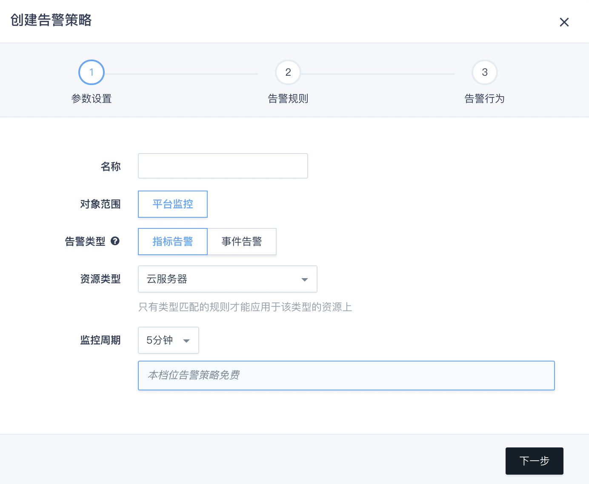
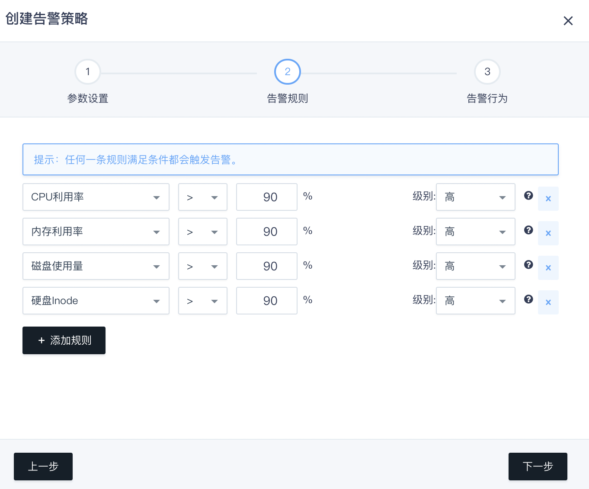
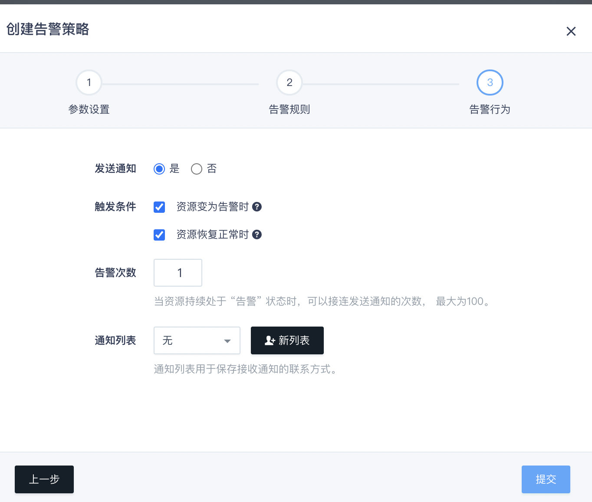
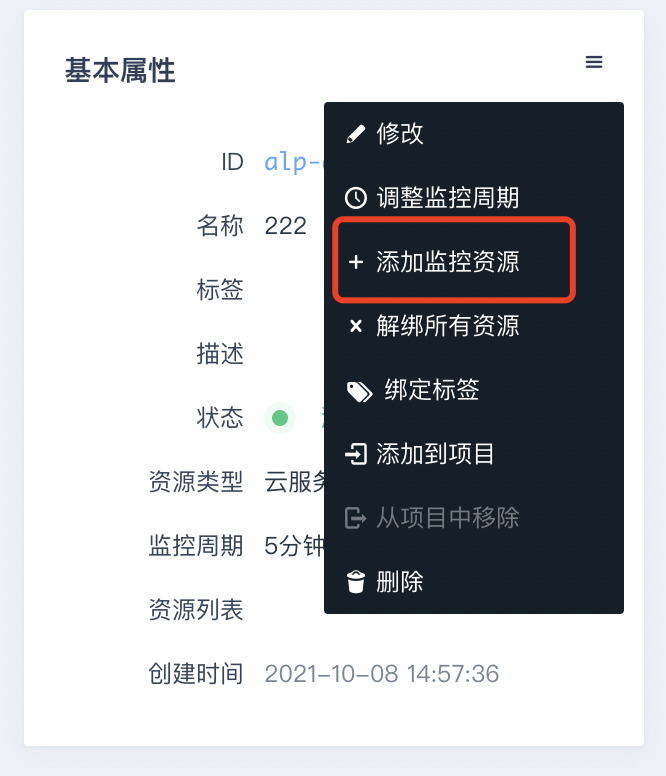
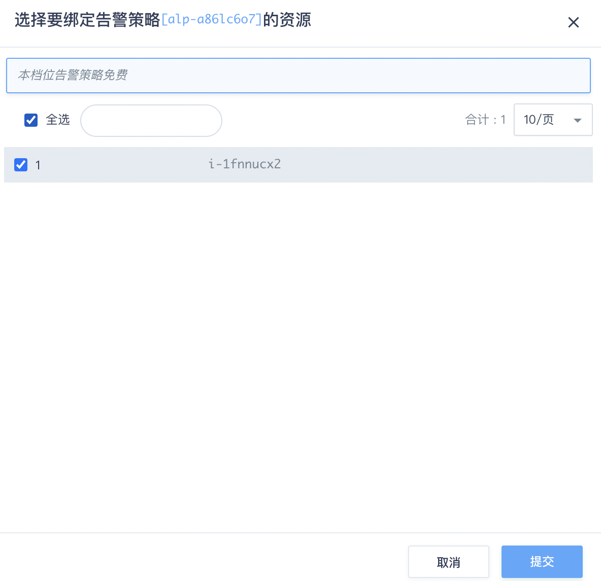
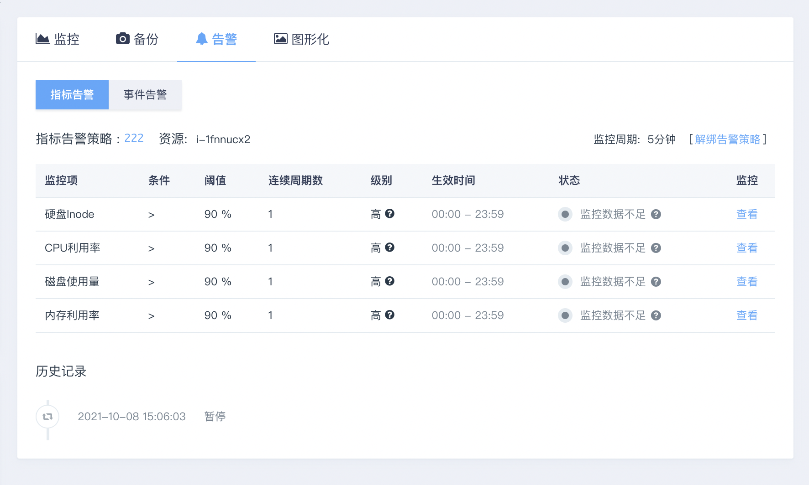
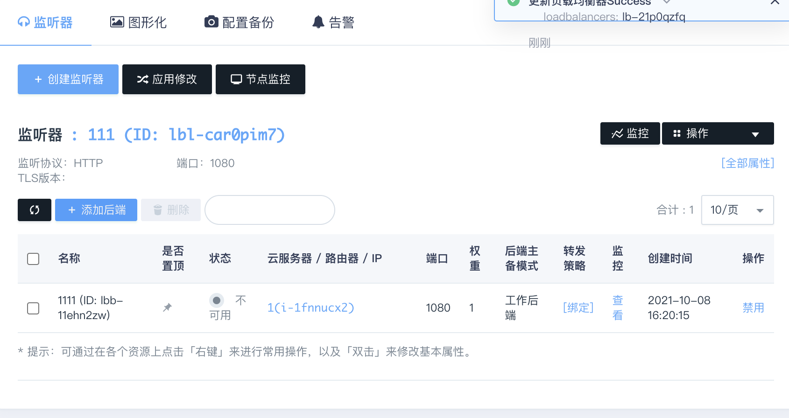
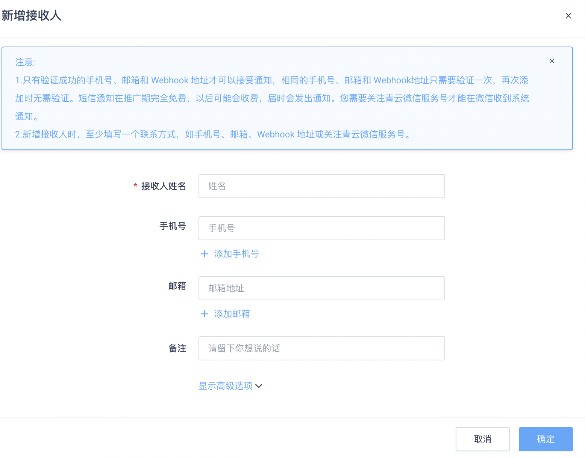
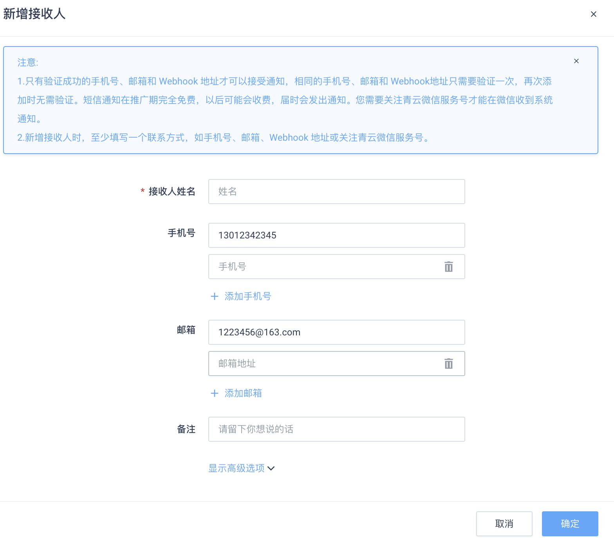
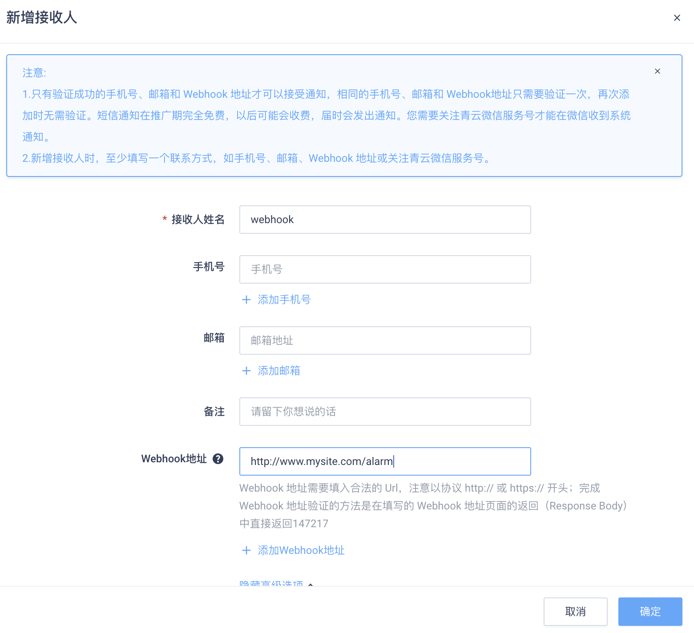

告警服务
告警功能提供对监控指标的告警服务支持，用户对云服务的核心监控指标设置告警规则，当监控指标触发用户设置的告警规则阈值时，则会按照用户设置的查收通知形式，收取告警信息。目前平台支持以邮箱、短信、等方式通知用户，让用户可以在第一时间得知云资源发生的异常情况，快速准确定位，并迅速处理故障，避免因资源问题或者外部操作原因，造成业务上的损失。
告警服务操作步骤
-
创建告警策略
首先我们需要创建一个告警策略，指定资源类型、检查周期、告警条件、通知列表等信息。 之后便可将其与资源关联，开始监控。下面以云服务器监控告警为例，介绍创建的步骤。 在控制台导航中点击『监控告警』进入告警页面，然后点击『创建』按钮开始创建。
参数设置
参数设置可输入名称，资源类型和监控周期。 其中资源类型决定了这个告警策略可支持哪些监控项，不同的资源支持不同的监控项，在指定了资源类型后，这个告警策略只能关联同类型资源。 此例中我们选『云服务器』。 
告警规则
这一步可对资源支持的监控项设置多条告警规则，任何一条满足条件都会触发告警。 
监控数据采样间隔都是1分钟，所以在设置阈值时，可能需要考虑这个时间因素。
告警行为
最后一步作为可选项，可设置发送通知到 通知列表 ， 在资源的告警状态发生变化时收到通知。 目前告警行为仅支持发送通知，以后还会支持更多操作。  到此告警策略便创建完成了，如果之后需要修改或调整，都可在告警策略详情页中操作。 需要注意的是，告警策略一旦创建完成，其『资源类型』属性便不可改变了。 如果需要其他资源类型的告警，请另行创建相应的策略。
-
添加监控资源
告警策略创建完成后，便可给它添加监控资源。如下图所示，在告警策略详情页的基本属性菜单中点击 『添加监控资源』，之后在弹窗中选择要监控的资源即可。
 添加监控资源后，监控服务便会自动对资源开始监控。 如果资源被删除，其所关联的监控告警也会随之解除。
-
查看告警历史
资源监控过程中的重要事件都会记录在告警历史中。告警历史可在资源详情页中看到，历史记录包括：
当修改了告警策略，并应用修改后，历史中会有一条配置变化的记录。
当资源监控状态发生变化时，会有相应的记录，
当执行告警事件时，也会有相应的记录， 
监控告警有三个状态：正常，告警，监控数据不足。其中监控数据不足是指没有取到监控数据， 这通常是因为资源已关闭，或公网 IP 已解绑导致。
负载均衡器监听器或后端服务的告警历史的查看需要鼠标点击『操作』或者右键某个后端服务，再选『监控告警』。 如图所示： 
监控历史会保留最近 50 条记录，更早的记录会定期删除。
-
通知列表
用户可以将一组手机号、邮箱和webhook保存到通知列表中，用以接收系统发送的通知。 目前监控告警功能使用了通知列表，在资源发生告警时第一时间将受监控的资源情况通知用户。 本指南将详细介绍如何新建和管理你的通知列表。
-
创建通知列表
每个亿栖云账户（包括子账户）都可以创建、管理自己的通知列表。你可以在控制台左侧导 航拦中找到 “通知列表 (Notification Lists)”一项，点击即进入通知列表管理界面。 点击 “创建” 按钮，在弹出框中将需要添加的手机和邮箱逐项录入。通常可以按你的工作人员组别列入不同的通知列表，例如建立开发团队、运维团队、产品团队等列表。如果在创建告警策略时还没有一个通知列表，在添加告警行为时点击 “新列表”，也能弹出新建通知列表的窗口完成创建。
点击 “对勾” 图标添加一条手机号/邮箱后，会自动通过短信或邮件发出验证码。手机号和邮箱的验证可以后续完成，不影响通知列表的创建，但只有验证成功的手机号/邮箱才可以接受告警通知，相同的手机号/邮箱只需要验证一次，再次添加时无需验证。 
每个通知列表的手机和邮箱数量总和上限是20个。点击 “提交” 按钮，即可完成通知列表 的创建。
-
修改通知列表
你可以在通知列表界面修改通知列表的内容，点击 ID 号或 “修改” 按钮都可以弹出修改框。 与创建时一样，如果还没有达到总和上限，你可以继续往列表中添加手机号/邮箱。也可以 将通知列表中的手机号/邮箱从列表中移除。
 -
创建 Webhook
Webhook 可以让你的系统直接收到通知。当监控告警发生时，系统会以 HTTP POST 的方式将通知信息发送到指定 URL ，你可以在这个 URL 的接收逻辑中自行处理通知信息。 每加入一条新的 Webhook URL 都需要先进行验证。验证方法是在 URL Response 中返回指定的 token ，一旦通过验证就无需再在 Response 中保留这个 token 。 每个 URL 对于同一个用户只需验证一次。 
当监控告警发生时，URL 会收到来自亿栖云主动推送的通知，推送方式是 POST ，POST form 携带的参数如下
{ "alarm_policy": "inst", # 监控告警策略名称 "resource": { # 资源信息 "resource_id": "i-fsda5aiv", "resource_name": "", "resource_type": "instance" }, "rules": { # 监控告警规则列表 "alpr-lr3gv19q": { "alarm_policy_id": "alp-7x97ldud", # 监控告警策略 ID "alarm_policy_rule_id": "alpr-lr3gv19q", # 告警规则 ID "alarm_policy_rule_name": "", # 告警规则名称 "condition_type": "gt", # 判断条件：gt (>), lt (<) "consecutive_periods": 1, # 连续周期数 "create_time": "2015-06-05T16:28:55", "disabled": 0, # 是否禁用 "meter": "disk-us", # 资源监控项 "owner": "usr-qkMLt5Oo", "recent_monitor_data": {"/": [[1433771551, 6]]}, "status": "ok", # 此监控项的状态：ok 正常，alarm 告警中，insufficient 无监控数据 "data_processor": "raw", # 监控阈值类型：raw - 阈值即为监控数据值，percent - 阈值表示的是『百分比』(百分比目前只用于 IP 带宽告警) "thresholds": "90" # 监控阈值 }, "alpr-u8vue5g6": { "alarm_policy_id": "alp-7x97ldud", "alarm_policy_rule_id": "alpr-u8vue5g6", "alarm_policy_rule_name": "", "condition_type": "lt", "consecutive_periods": 1, "create_time": "2015-06-05T16:28:55", "data_processor": "raw", "disabled": 0, "meter": "memory", "owner": "usr-qkMLt5Oo", "recent_monitor_data": [[1433771500, 10.3], [1433771510, 10.4], [1433771520, 10.3], [1433771530, 10.4], [1433771540, 10.3]], "status": "alarm", "thresholds": "90" }, "alpr-wkjaaqvh": { "alarm_policy_id": "alp-7x97ldud", "alarm_policy_rule_id": "alpr-wkjaaqvh", "alarm_policy_rule_name": "", "condition_type": "gt", "consecutive_periods": 1, "create_time": "2015-06-05T16:28:55", "data_processor": "raw", "disabled": 0, "meter": "cpu", "owner": "usr-qkMLt5Oo", "recent_monitor_data": [[1433771500, 0.2], [1433771510, 0.5], [1433771520, 0.2], [1433771530, 0.4], [1433771540, 0.2]], "status": "ok", "thresholds": "90" } }, "trigger_status": "alarm", # 通知触发条件：ok，alarm，insufficient "zone": "beta" }因为通知列表不仅用于监控告警，还可用于接收自动伸缩和定时器的通知， 而不同服务推送的 webhook 数据也不同，这里一并说明。 当自动伸缩触发通知时，webhook 携带的参数如下
{ "zone": "beta", "autoscaling_rules": { # 自动伸缩规则属性 "autoscaling_policy_rule_id": "aspr-96lss7vs", "history_type": "scale_success", # 执行结果 "description": "", "scale_direction": "decrease" # increase: 上调, decrease: 下调 }, "autoscaling_policy": { # 自动伸缩策略属性 "autoscaling_policy_id": "asp-36fcf6sb", "resource": { # 自动伸缩调整的资源 "resource_name": "", "eip_addr": "192.168.7.88", "resource_type": "eip", "resource_id": "eip-5irjjfki" }, "description": "", "autoscaling_policy_name": "", "scale_type": "eip_bandwidth" # 自动伸缩策略类型 } }当定时器触发通知时，webhook 携带的参数如下
{ "tasks": [{ # 定时器任务属性 "scheduler_task_id": "st-jtwx7hqt", "history_type": "task_fail", # 任务执行结果 "task_type": "start_instances", # 任务类型 "scheduler_task_name": "" }], "scheduler": { # 定时器属性 "scheduler_name": u"scheduler", "scheduler_id": "schd-x0v8l9x9" }, "zone": "beta" }